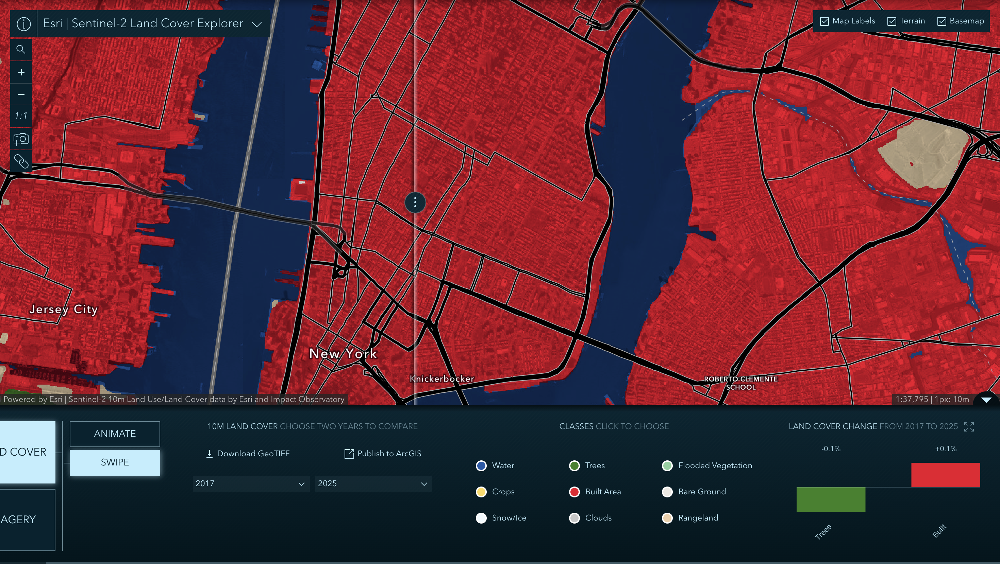
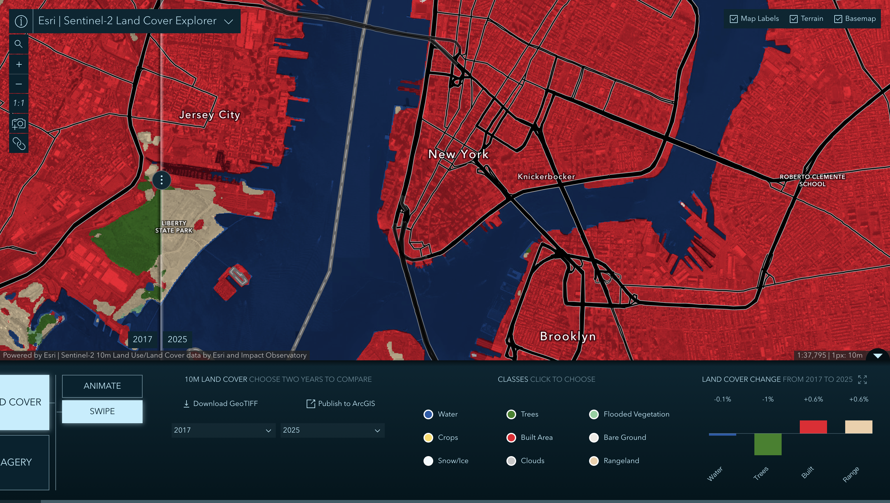

Week 06 · October 2026
Land cover, then and now
The question
How has the land cover patterns around Washington Square Park changed between 2017 and 2025, and what forms of change are excluded by the classification?
The data
I used the Esri and Impact Observatory Sentinel-2 10m Land Use/Land Cover Time Series for 2017 and 2025. The annual maps classify each 10 m pixel into one of nine classes (Water, Trees, Flooded Vegetation, Crops, Built Area, Bare Ground, Snow/Ice, Clouds, Rangeland). The layer is provided under the Esri Master License Agreement, while its source land-cover data are licensed under CC BY 4.0. This resolution means that paths, individual trees, planting beds, and other features smaller than approximately 100 square metres may not be represented separately.
The method
I selected 2017 and 2025 because they are the earliest and latest years available in the Sentinel-2 land-cover series and bracket the construction of NYU’s Paulson Center near Washington Square Park. Construction began in 2016, and the building officially opened in January 2023. Comparing 2017 with 2025 therefore tests whether the classifier captured the transformation from an active construction site to a completed large-scale building. I used Swipe mode to compare 2017 and 2025 while holding the map extent, scale, rendering, and land-cover product constant. Both sides use the same nine classes and colors. I selected the 1:1 option so both years were displayed at the native resolution of 1 px:10 m. I treated Washington Sqaure Park as my primary site, and Liberty Sqaure Park as my secondary site, which witnessed relatively more substantial change, for comparison purpose.
The evidence



What I found
Around Washington Square Park, the map remains almost entirely red, or Built Area, in both 2017 and 2025. Across the displayed extent, Trees decrease by 0.1% while Built Area increases by 0.1%. In particular, the Paulson Center site remains Built Area even though construction began in 2016 and the completed building opened in 2023. I therefore suspect that the site underwent substantial physical redevelopment, but the map cannot show it because both the construction site and completed building belong to the same broad class. In my secondary comparison, Liberty State Park presents a more visible contrast: much of the park changes from green Trees in 2017 to beige Rangeland in 2025. Across that displayed extent, Water decreases by 0.1%, Trees decrease by 1.0%, Built Area increases by 0.6%, and Rangeland increases by 0.6%. However, these values show a change in classification and do not suggest why it occurred or whether the vegetation actually changed to the same extent.
What this does not show
I am using the Sentinel-2 land-cover classes to stand for physical redevelopment around Washington Square Park and Liberty State Park, and it might fail because the classifier’s fixed class boundaries place urban parks, yards, groves, construction sites, and completed buildings within the same broad Built Area class. This mechanism explains why the Paulson Center remains red in both 2017 and 2025 despite its transformation from a construction site into a completed building. In this case, the classification could be more misleading than the Week 4 vegetation index: the index might misrepresent how green a place is, but the classifier can erase the distinction between a park and the surrounding city altogether. The change panel also compares the total number of pixels in each class across the visible extent rather than matching pixels individually, so opposite transitions can cancel each other out. Therefore, it cannot demonstrate that specific pixels at Liberty State Park changed directly from Trees to Rangeland, nor can it identify renovation, park management, or other causes of the apparent change.